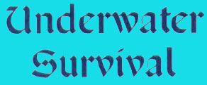
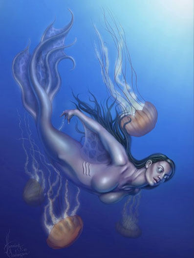

Respirare sott'acqua e
trattenere il respiro
L'assenza della possibilità di respirare rappresenta per
le creature terrestri il maggiore ostacolo ad avventurarsi nelle profondità
delle acque. Esistono diverse soluzioni per risolvere questo problema. In primo
luogo, aiuta la magia sia dei maghi che clericale. Alcune rare piante se
trattate accuratamente, inoltre, possono permettere di respirare sotto le acque
per brevi periodi. La tecnologia, infine, permette non senza rischi di
avventurarsi nelle profondità senza affogare.
Se una creatura terrestre non è in grado di respirare sotto l'acqua potrà unicamente cercare di trattenere il fiato. Una creatura che non effettui sforzi fisici può mantenere il respiro per un numero di rounds pari ad 1/3 del valore della sua costituzione (calcolato per eccesso). In queste condizioni può semplicemente muoversi e nuotare del suo normale movimento. Ogni round in cui, invece, si sforza (accumulando punti fatica ad es. nuotando veloce o combattendo) sarà calcolato come se siano trascorsi due round ai fini del trattenere il fiato. Appena è finito questo periodo, all'inizio di ogni nuovo round (prima della fase delle intenzioni) la creatura dovrà superare una prova di costituzione (indipendentemente dalle sue azioni) con una penalità crescente di -2 per ogni round successivo al primo. Se la prova fallisce la creatura dovrà entro la fine del round respirare altrimenti morirà soffocata.
Se la creatura ha la possibilità di prendere una buona quantità di ossigeno prima di immergersi (azione di iperventilazione che dura l'intero round precedente all'immersione e che richiede concentrazione per avere successo) otterrà 1 round supplementare prima di dover effettuare le prove di costituzione. I personaggi che hanno la competenza swimming, infine, essendo aiutati a trattenere il fiato ottengono in ogni caso 1 ulteriore round supplementare.
Esempio di applicazione delle regole precedenti: Immaginiamo che il guerriero Wiliam si tuffi in acqua improvvisamente senza aver il tempo di effettuare iperventilazione. Avendo costui 17 di costituzione e non disponendo della competenza swimming potrà resistere 6 rounds. Il primo round si muove semplicemente (rounds residui 5), nel secondo round combatte contro un tritone (rounds residui 3), nel terzo combatte ancora (rounds residui 1) e nel quarto round continua a combattere (terminati i rounds di fiato), all'inizio del quinto round quindi effettua la prova di costituzione e ottenendo 16 riesce a continuare a combattere sott'acqua, all'inizio del sesto round effettua la prova con la penalità di -2 ed ottenendo un altro 16 la fallisce, decide quindi nella fase delle intenzioni di effettuare tutto il suo movimento per tornare in superficie e respirare alla fine del round.
Combattere sotto la
superficie dell'acqua
La resistenza dell'acqua e la difficoltà di coordinare i
movimenti fanno si che i combattenti di superficie abbiano grosse penalità a
combattere sotto l'acqua. Le penalità sono le seguenti:
* Lentezza dei movimenti: +4 all'iniziativa
* Difficoltà a colpire che varia a seconda della dimensione e del tipo dell'arma usata (si noti che chi utilizza un'arma medium o large con due mani riduce di un 1 la penalità mentre chi utilizza attacchi naturali riceve un malus di -2 alla Thac0).
| Arma da punta small | nessuna penalità |
| Arma da taglio small | -1 thac0 |
| Arma da botta small | -3 thac0 |
| Arma da punta medium | -2 thac0 |
| Arma da taglio medium | -3 thac0 |
| Arma da botta medium | -4 thac0 |
| Arma da punta large | -2 thac0 |
| Arma da taglio large | -4 thac0 |
| Arma da botta large | -5 thac0 |
* Riduzione dei danni che varia a seconda del tipo dell'arma utilizzata (la riduzione è effettuata per ultima dopo l'applicazione di ogni altro bonus o penalità, si consideri, inoltre, un arrotondamento per difetto ma con un minimo di 1 punto ferita):
| Arma da punta o attacchi naturali | 70% dei danni |
| Arma da taglio | 50% dei danni |
| Arma da botta | 30% dei danni |
* Impossibilità di effettuare la manovra di carica.
* Impossibilità di utilizzare efficacemente lo scudo (il quale, di fatto, impedisce solo ulteriormente i movimenti di chi lo cerca di indossare).
* Impossibilità di utilizzare efficacemente le armi da tiro e da lancio, fatta eccezione per la balestra. La balestra può essere utilizzata ma l'acqua potrà rovinare il suo meccanismo ed il suo legno. Se una balestra è immersa nell'acqua per più di 1 turno la balestra dovrà superare un tiro salvezza pari a 9, se il tiro salvezza fallisce la balestra si sarà inceppata oltre ad essersi rovinata definitivamente (non sarà possibile ripararla). Ogni giorno questo tiro salvezza dovrà essere ripetuto. In ogni caso il raggio di azione della balestra sotto l'acqua è ridotto al 10% del normale ed i dardi producono 1 punto di danno in meno (con il minimo un danno)
Underwater Combat (1 slot) N/A, N/A
Groups:
Warrior – Rogue
Chi possiede questa competenza è allenato a combattere sotto la superficie dell'acqua (si noti che tutte le creature marine, come i tritoni, si considerano già avere questa competenza). Per questo motivo costoro riducono la loro penalità all'iniziativa e quella alla loro Thac0 di 2 punti. Inoltre, se utilizzano armi da punta o attacchi naturali producono il 100% dei danni inflitti normalmente, inoltre possono effettuare la manovra di carica. Chi possiede questa competenza, infine, annulla ogni penalità quando combatte parzialmente immerso contro esseri che si trovano in superficie (continuano, però ad applicarsi le penalità al suo movimento).
Combattere
con il corpo parzialmente nell'acqua
In alcune circostanze gli avventurieri possono trovarsi a
combattere in superficie con una parte del loro corpo immerso nell'acqua (come
ad esempio negli acquitrini, nelle paludi, in una pozza, ecc...). In questo caso
occorre distinguere se gli stessi cerchino di combattere contro nemici che si
trovano sotto l'acqua o contro nemici anch'essi parzialmente immersi o volanti.
Nel primo caso (si attacca una creatura interamente immersa nell'acqua) si
applicheranno le regole del combattimento sotto la superficie dell'acqua,
inoltre costoro non otterranno i bonus dovuti alla posizione sopraelevata.
Nel secondo caso (si combatte con una creatura che si trova fuori dall'acqua) si applicheranno dei modificatori diversi che cambiano a seconda della percentuale del corpo che hanno immerso.
| Percentuale del corpo immerso | Thac0 / AC | Movimento |
| Immerso fino al ginocchio | nessuna penalità | +1 punto /esagono |
| Immerso fino alla vita | -1 Thac0 | +2 punto /esagono |
| Immerso fino al petto | -2 Thac0 / +1 AC | +3 punto /esagono |
Nuotare e muoversi sott'acqua
Una creatura che non possiede uno specifico fattore movimento in immersione può comunque nuotare spostandosi in un round a fattore movimento tre. Un personaggio con la competenza swimming potrà, invece, muoversi spostandosi in un round a fattore movimento quattro. Tale velocità rappresenta anche la velocità di risalita mentre se un personaggio nuota direttamente verso il fondale potrà aggiungere al suo movimento la velocità di affondamento (che senza ingombro è pari a 3 metri al round).
Un corpo affonda normalmente (se per esempio è legato o si lascia affondare) alla velocità di 3 metri al round. Si noti che è impossibile nuotare indossando una corazza metallica snodata od una corazza di categoria superiore (fatta eccezione per le corazze speciali di scaglie di creature), per cui chi indossa tali corazze affonderà semplicemente alla suddetta velocità.
In ogni caso affonderà a questa velocità anche chi indossa od è agganciato ad almeno 30 o + libbre di equipaggiamento nonostante cerchi di nuotare per non affondare (chi possiede la competenza swimming non considererà le prime 30 libbre di ingombro potendo restare in superficie nuotando con tale peso).
Per ogni 30 libbre ulteriori di ingombro (o di zavorra) la velocità di discesa aumenterà di tre metri al round fino a raggiungere la velocità massima di discesa pari a 15 metri al round.